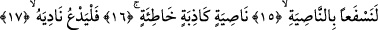
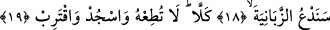

YARATAN RABBININ
ADIYLA OKU!
Bismillâhirrahmânirrahîm
1. Yaratan Rabbinin adıyla oku!
2. O, insanı bir aşılanmış yumurtadan yarattı.
3. Oku! Rabbin, en büyük kerem sâhibidir.
4. Kalemle (yazmayı) öğreten
5. İnsana bilmediklerini belleten (öğreten O’dur).
6. Gerçek şu ki, insan azar.
7. Kendini kendine yeterli görerek (azar).
8. Kuşkusuz dönüş Rabbinedir.
Ey Muhammed! sana vahyolunan şeyleri “Yaratan Rabbinin adı ile oku.” Burada
okuma fiiline “sana vahyolunan şeyleri” şeklinde bir mef’ûl getirdik. Bu sebebsiz
değildir. Çünkü “okuma” emri mutlaka “okunulacak bir şey”in var olmasını gerektirir.
Neyin okunacak olduğu belirtilmediği için bunun verilen emre bitişik olması gereklidir.
Bu sûre, ister ilk indirilen sûre olsun, isterse olmasın farketmez. Burada “teklif-i mâ lâ
yutak/İnsanın gücünün yetmeyeceği bir şeyle mükellef tutulması” diye bir şey
düşünülemez. Verilen okuma emri ister derhal okuma anlamına gelsin, ister gelmesin
farketmez.
En yakın ihtimal bu sûrenin ilk beş âyetinin -sahih hadislerin belirttiğine göre-